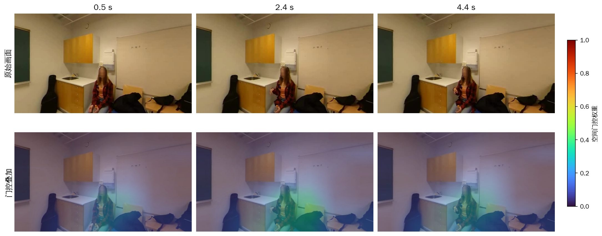
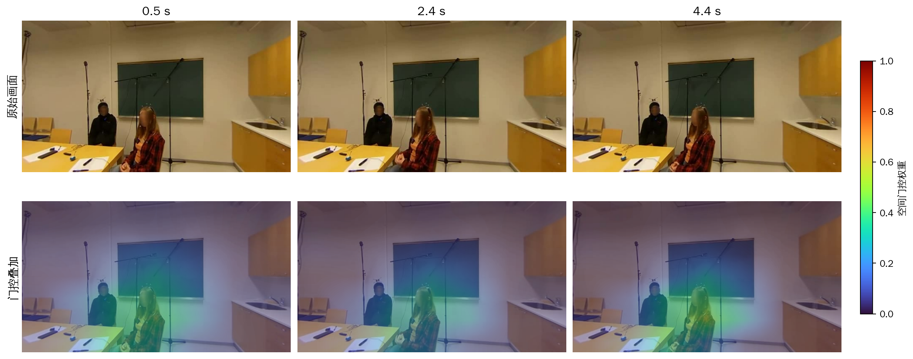
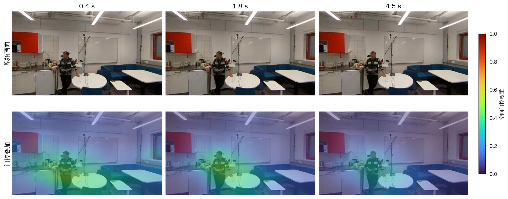

TSAVF空间门控可视化
基于声源表征增强的声事件定位与检测 · 补充材料
3个代表性片段，用于观察模型对不同视觉区域的加权。每个案例包含带原始音频的视频和三个时刻的门控图。
颜色表示0～1的空间门控权重，数值越大表示区域特征保留程度越高。热图由7×7门控权重插值获得，所有案例使用统一色标。展示时刻依据真实画内声事件活动区间选取。
S01 单人语音
上行：原始画面 ／ 下行：TSAVF空间门控热图叠加

在所示时刻，人物附近的门控权重相对较高，部分墙面和柜体权重较低。
点击图片查看大图；小屏幕可横向滑动图片。下载视频
样本：fold4_room15_mix008_deg059_start0484
S03 前后景人物
上行：原始画面 ／ 下行：TSAVF空间门控热图叠加

较高权重主要覆盖前景人物及其周围，背景人物附近的权重相对较低。
点击图片查看大图；小屏幕可横向滑动图片。下载视频
样本：fold4_room15_mix006_deg351_start1942
S18 站立人物
上行：原始画面 ／ 下行：TSAVF空间门控热图叠加

较高权重覆盖站立人物与邻近操作台，远处沙发、门等区域权重相对较低。
点击图片查看大图；小屏幕可横向滑动图片。下载视频
样本：fold4_room16_mix001_deg008_start1440